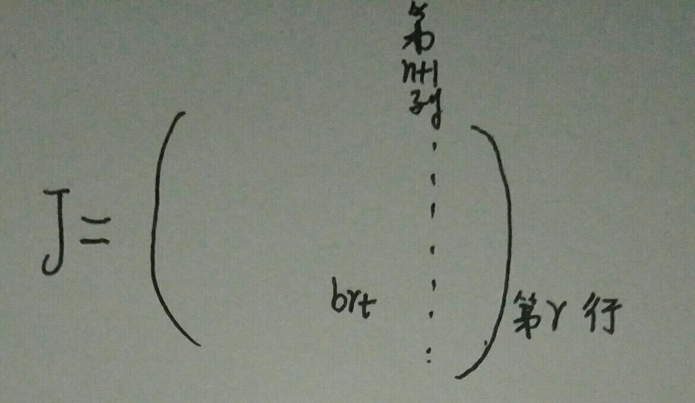
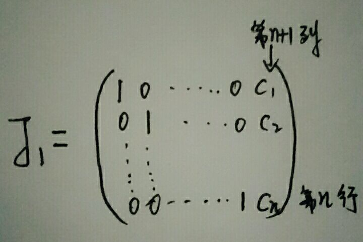
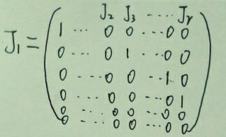
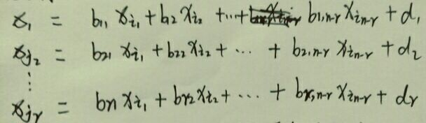

解线性方程组
一、解线性方程组(3-7)矩阵消元法 阶梯型 主元
1.对n个线性方程组成的线性方程组(即
n元线性方程组)的增广矩阵做初等行变换得到一个阶梯型矩阵并记为J（J有$n+1$列，因为包含了常数项那一列），记J的非零行的个数为r.
证明：
- 当出现
等号左边全是０，而右边非０时（这显然不可能的事儿），该线性方程组无解；- 当$r＝n$时，该线性方程组有
唯一解；- 当$r<n$时,该线性方程组有
无穷解；
证：
- 第一条显然成立；
- 在证明后面两个结论之前，我们先来证明$r<=n$,即阶梯型矩阵非零行的数目$r$不可能大于（超过）未知量$n$的数目:

首先可以明确的是，J的第r个主元不能位于第$n+1$列，至多也只能在第$n$列，因此$t<=n$，稍微想一下就知道，主元是指每一行第一个非零元素，上图中的元素$b$为第$r$行的主元，且位于第$t$列，主元不可能跑到常数项的那个第$n+1$列去，所以有$t<=n$.
再来想想，每一行的主元所在列数不一定正好是对应的行数，比如在第二行中，$x_２$的系数在经过初等行变换之后为０，而$x_３$的系数非零.类似情况有很多，因此主元所在列数$t$往往是靠右，即主元所在列数$t$往往大于主元所在行数，而图中主元$b$所在的行数被我们设定为$r$，那就是说主元$b$所在列数$t$往往大于主元所在行数$r$，注意一点，我们这里的往往大于是指一般情况，可以取等号，即 $t>=r$，从而有$r<=n$，这就证明了阶梯型矩阵非零行的数目r不可能大于（超过）未知量n的数目.
等一下，再补充一些（更形象的解释一下）：在证明$t>=r$时，在矩阵J中，b是最后一个主元，或者换句话说，b所在行的下边的行（我们也不知道具体有多少行，也有可能是０行，如果$r=n$），全部是零元素，那么上面的主元所在列由于是要成阶梯型的，可以脑补画面（阶梯型），这个阶梯，每一凳的砖块数不一样，最少是一块，那么也有可能下一凳（下一个主元）用了两块甚至更多块砖，就像Python的缩进一样，当每凳（每个主元）都只用１块砖时，就是最节省的情况（从左到右，一凳一凳的一个阶梯），此时恰好有$r=t$ ，而在有浪费的情况（每凳所用砖头数大于１）下，会向右推进，使得$t$变大，从而就有了$t>=r$.
总结下就是：
$J$中主元所在列数$t$不可能跑到常数项所在列（第$n+1$列），所以有$t<=n$；
$J$中主元所在行数$r$在不浪费的情况下也只能等于t,否则小于$t$，所以有$r<=t$；
综上，有
$$r<=n$$ - 现在来证明当$r=n$时，该$n$元线性方程组有唯一解.
将阶梯型矩阵$J$继续进行变换，化为简化的阶梯型，记做$J_1$，如下图
此时是$r=n$的，那么很明显，
$$(C_1,C_2，…，C_n)$$
就是该线性方程组的唯一解啦. - 现在来证明当$r<n$时，该$n$元线性方程组有无穷多个解.
经过初等行变换，第一行的主元总是可以在第一列位置处，而其他行的主元所在列位置则不一定正好与其对应的行数,如下图
这里要注意啦，第$２$行的主元不一定在第２列，我们不妨标记其为$J_2$列，$J_2$不一定是$２$.
将所有的主变量（以主元为系数的变量）系数化为$１$，并移到等号左边，将自由未知量（所有$n$个变量除去主变量）移到等号右边，如下图

由于$r<n$，并且左边只有r个主变量，那么右边肯定有$n-r$个自由未知量.
自由未知量的取值不同，对应的该线性方程组的一组解也不同，从而证明了当r<n时，n元线性方程组有无穷多个解.1
以上，便是全部的证明过程,Over~~~~~~~~~~~~~~~
现在，我们来讨论一下齐次线性方程组（常数项全为零的线性方程组）
显然，$(0，0，… ，0)$是原方程组的一组解，称为零解；
其余的解（如果存在）则叫做非零解.
$n$元齐次线性方程组有非零解的充分必要条件是：系数矩阵经过初等行变换化成的阶梯型矩阵的非零行数目$r<n$.
但如果仅仅是来判断一个$n$元齐次线性方程组是否有非零解，还得每次进行初等行变换，好不麻烦，于是，针对于齐次的特殊性，我们有更简单的判别方法，那就是：
$n$元 齐次线性方程组有非零解的充分条件是方程组中方程的个数$s$小于未知量的个数$n$.- 证明很简单：前面已经证过，当$r=n$时，该$n$元齐次线性方程组有唯一解；我们又知道，在$n$元齐次线性方程组中，由于常数项全为０，所以$(0，0，… ，0)$是原方程组的一组解（叫做零解），那么这个零解就是该$n$元齐次线性方程组出现的唯一解的情况.去除这种唯一解的情况，那就只剩下了无穷多个解的情况（不可能出现无解的情况，因为不管怎么样，都至少有一组零解了，怎能再无解？）了.按照之前的套路，对该方程组做初等行变换，记住，一共有$s$个方程，那么经过初等行变换之后，所得到的方程的个数$r$肯定小于或等于$s$，即$r<=s$，又由于已知（条件）$s<n$，因此我们得到$r<n$，而这个结论正好是前面证过的关于$n$元线性方程组有无穷多个解的条件，这里的无穷多个解肯定全是非零解，因为对于齐次线性方程组来说，零解是必然存在的，而且这种情况已经被我们划分到方程组有唯一解的类别之中，那么另外一种情况，即有无穷多个解中，这无穷多个解肯定全是非零解了，要不然就矛盾了.这样子我们就完成了上述结论的简单证明.
1 | 再次提醒，我们刚才的证明的结论是针对于n元齐次线性方程组，齐次，齐次，齐次!而且只是**充分条件** |